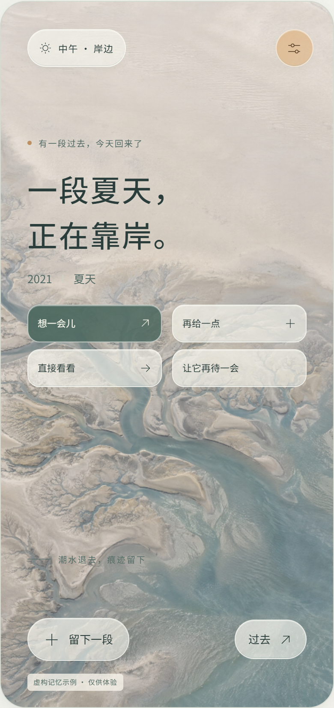
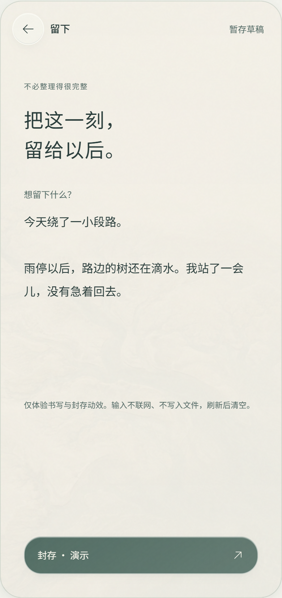
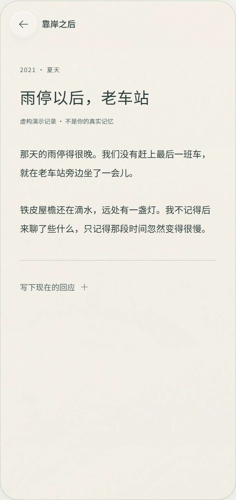
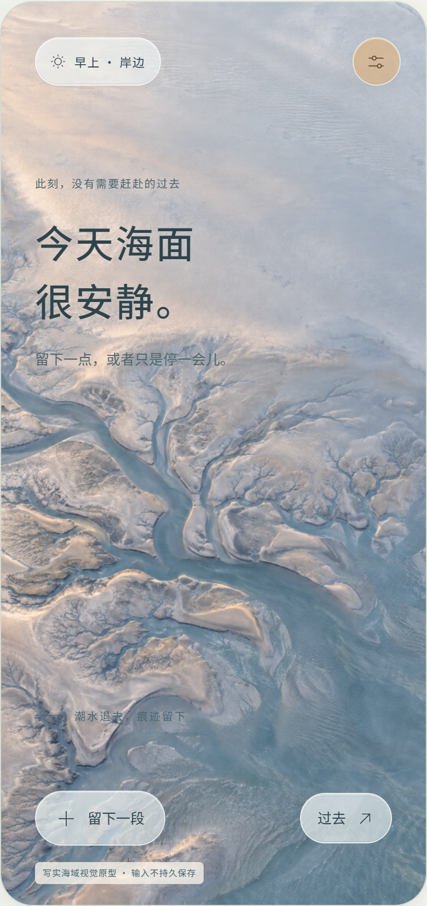
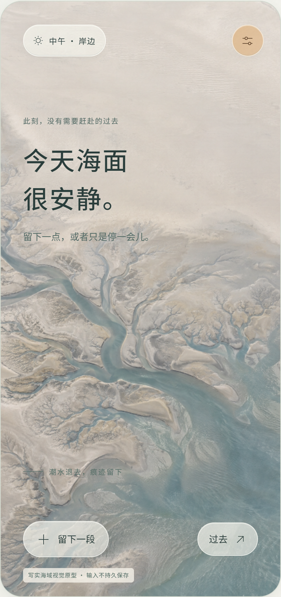
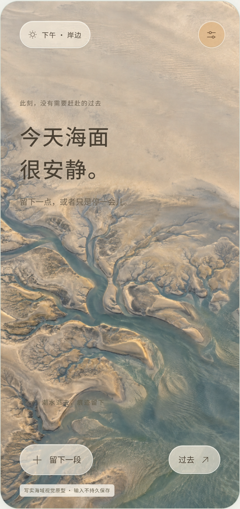
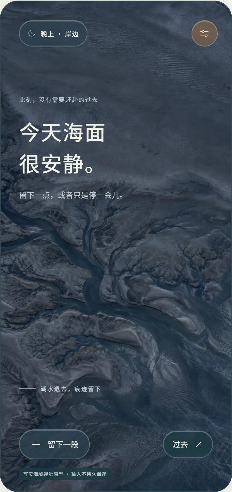

未完成_
NATURAL TIDAL WORLD真实版 · UI 设计展示
设计方向 / 自然写实 · 光照 · 玻璃操作层
让记忆，在自然里靠岸。
把海域作为环境，而不只是背景图片。
自然负责沉浸，安静的界面负责阅读。
01岸边 / 首页 · A 横向潮滩

02靠岸 / 记忆出现

让回忆保留自主节奏。
03留下 / 书写

把注意力交给书写。
04重逢 / 阅读

保留自然色调和轻材质。
色彩与材质PALETTE / NATURAL MATERIALS
暖沙白
#F4F1E8浅潮蓝
#92B0B8苔灰绿
#627867暖砂光
#DFC3A0夜海蓝
#253D4B材质与动效ENVIRONMENT / INTERACTION
海面→退潮→潮滩→内容
水面流动与光照转场营造环境连续性。
玻璃是操作材质，正文仍由安静表面承载。
四时段光照原型局部 · 当前通过手动选择切换



